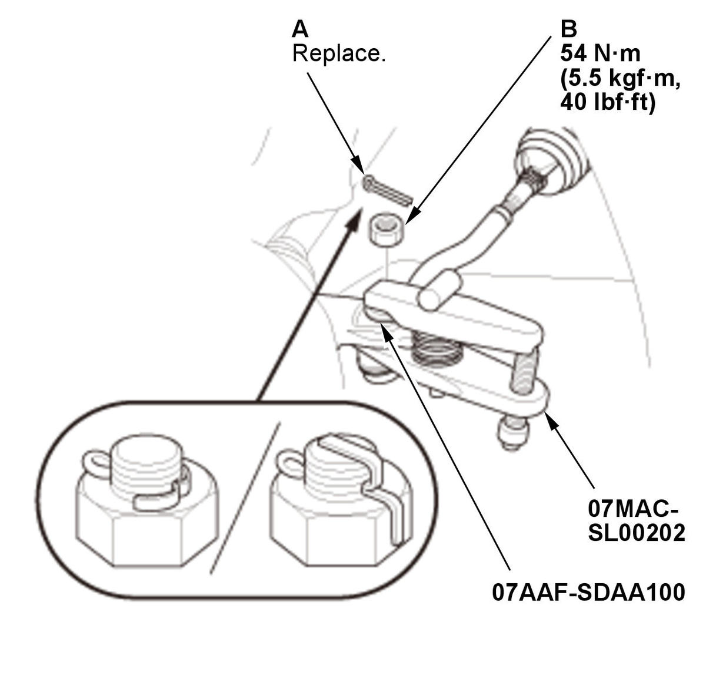
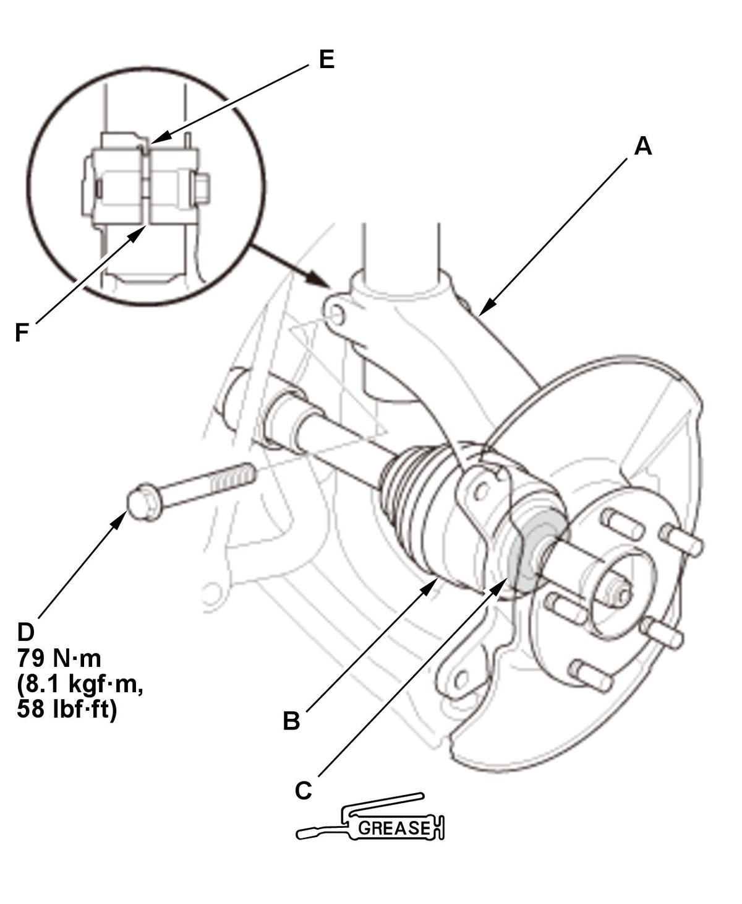
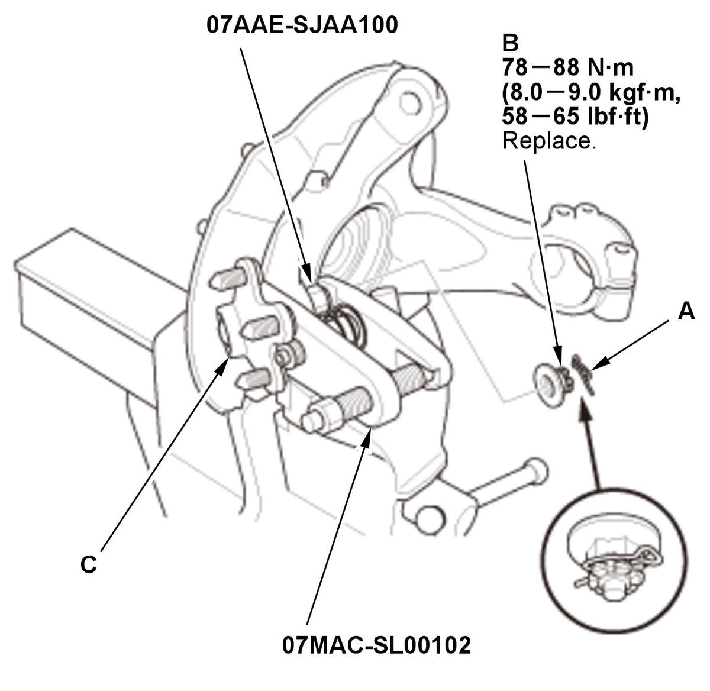

Removal and Installation
NOTE: Refer to the Exploded View as needed during the following procedures.
Knuckle/Hub
- Vehicle - Lift
- Front Wheel - Remove
- Wheel Speed Sensor - Remove
- Brake Hose Bracket - Remove
- Brake Caliper - Remove
1. Remove the caliper assembly without disconnecting the brake hose from the caliper body .
NOTE:- To prevent damage to the caliper assembly or brake hose, use a short piece of wire to hang the caliper assembly from the undercarriage.
- Do not twist the brake hose excessively.
- Spindle Nut - Remove
1. Pry up the stake (A) on the spindle nut (B). 2. Remove the spindle nut.
NOTE:
- Use a new spindle nut during reassembly.
- Tighten the spindle nut to the specified torque during reassembly.
Specified Torque:
1.5L engine: 245 N.m (25.0 kgf.m, 181 lbf.ft) 2.0L engine: 181 N.m (18.5 kgf.m, 133 lbf.ft) - Front Brake Disc - Remove
- Hub for Damage and Cracks - Check
- Tie-Rod End Ball Joint - Disconnect

Courtesy of HONDA, U.S.A., INC.1. Remove the cotter pin (A). NOTE: During installation, install the new cotter pin after tightening the nut, and bend its end as shown.
2. Remove the nut (B).
NOTE: Be careful not to damage the ball joint boot when installing the ball joint remover.
- Lower Ball Joint - Disconnect
1. Disconnect the lower ball joint from the lower arm . - Knuckle/Hub Assembly - RemoveFig 3: Front Knuckle/Hub Assembly Components And Damper Pinch Bolt With Torque Specifications (Except Type-R)

Courtesy of HONDA, U.S.A., INC.1. Pull the knuckle (A) outward, and separate the outboard joint (B) from the front hub using a soft face hammer outward.
NOTE:- Do not pull the driveshaft end outward. The inner driveshaft inboard joint may come apart.
- During installation, apply about 3 g (0.11 oz) of moly 60 paste (P/N 08734-0001) to the contact area (C) of the outboard joint and the front wheel bearing.
2. Remove the damper pinch bolt (D).
3. Move the knuckle downward, and remove the knuckle from the damper.
NOTE: During installation, the aligning tab (E) on the damper unit into the slot (F) of the knuckle.
- Lower Ball Joint - Remove

Courtesy of HONDA, U.S.A., INC.1. Remove the lock pin (A). NOTE: During installation, install the lock pin as shown after tightening the new castle nut.
2. Remove the castle nut (B).
NOTE: Use a new castle nut during reassembly.
NOTE: Be careful not to damage the ball joint boot when installing the ball joint remover.
- All Removed Parts - Install
1. Install the parts in the reverse order of removal.
NOTE:- Be careful not to damage the ball joint boot when connecting the knuckle.
- Before connecting the ball joint, degrease the threaded section and the tapered portion of the ball joint pin, the ball joint connecting hole, the threaded section, and the mating surfaces of the castle nut.
- Torque the castle nut to the lower torque specification, then tighten it only far enough to align the slot with the ball joint pin hole. Do not align the castle nut by loosening it.
- Before installing the spindle nut, apply a small amount of engine oil to the seating surface of the nut. After tightening, use a drift to stake the spindle nut shoulder against the driveshaft.
- Wheel Alignment - Check